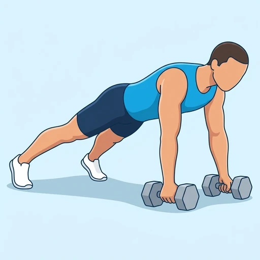
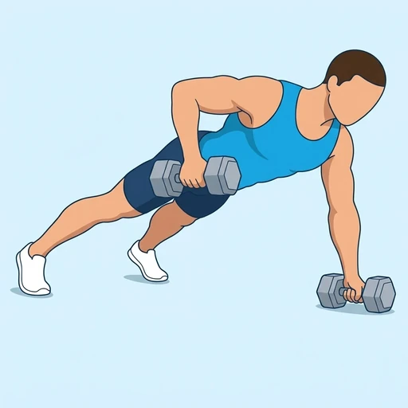

Renegade Row
A plank-based rowing exercise in which a dumbbell in each hand is rowed alternately toward the hip while the other hand stays planted. It trains the back and arms while the trunk resists rotation.
Back · Dumbbell · Intermediate


Muscles worked by the Renegade Row
Primary
Secondary
Also called: lats, lat, latissimus dorsi, latissimus, back wings, rhomboid.
Equipment
Also called: db, dumbell, hex dumbbell, rubber dumbbell, hand weight.
How to do the Renegade Row
- Start in a high plank with a hand on each of two dumbbells, shoulder-width apart, and the feet set wide for stability.
- Brace the trunk so the body forms a straight line from head to heels.
- Row one dumbbell up toward the hip, driving the elbow back along the ribs.
- Keep the hips square to the floor and do not let the body twist.
- Lower the dumbbell to the floor under control.
- Repeat on the other side and keep alternating.
Form tips
- Use hexagonal dumbbells so they do not roll, and start light.
- Set the feet wider to make it easier to keep the hips level.
- Do not shrug or twist; pause briefly at the top of each row to prove control.
At a glance
| Body part | Back |
|---|---|
| Category | Strength |
| Force type | Pull |
| Mechanic | Compound |
| Difficulty | Intermediate |
| Equipment | Dumbbell |
| Goals | Hypertrophy, Strength |
| Tags | Knee safe, Lower back safe, Shoulder safe, No axial load |
| MET | 6.0 (metabolic equivalent, for calorie estimates) |
| Unilateral | No |
| Bodyweight | No |
| Dataset id | renegade-row |
Renegade Row in German & Spanish
| German | Renegade Row |
|---|---|
| Spanish | Remo Renegado |
Descriptions, instructions and tips ship in all three languages in the JSON.
Related exercises
Exercise data (JSON)
The record below is exactly what exercises.json ships for this exercise — names, descriptions, instructions and tips in English, German and Spanish.
{
"id": "renegade-row",
"name_en": "Renegade Row",
"name_de": "Renegade Row",
"name_es": "Remo Renegado",
"description_en": "A plank-based rowing exercise in which a dumbbell in each hand is rowed alternately toward the hip while the other hand stays planted. It trains the back and arms while the trunk resists rotation.",
"description_de": "Eine Ruderübung aus der Plank, bei der abwechselnd eine Kurzhantel in jeder Hand zur Hüfte gerudert wird, während die andere Hand fest am Boden bleibt. Sie trainiert Rücken und Arme, während der Rumpf der Rotation entgegenwirkt.",
"description_es": "Un ejercicio de remo desde la plancha en el que se rema alternativamente con una mancuerna en cada mano hacia la cadera mientras la otra mano permanece apoyada. Trabaja la espalda y los brazos mientras el tronco resiste la rotación.",
"category": "strength",
"force_type": "pull",
"mechanic": "compound",
"difficulty": "intermediate",
"equipment": "dumbbell",
"body_part": "back",
"primary_muscles": [
"latissimus_dorsi",
"rhomboids"
],
"secondary_muscles": [
"biceps_brachii",
"obliques",
"rectus_abdominis"
],
"goals": [
"hypertrophy",
"strength"
],
"tags": [
"knee_safe",
"lower_back_safe",
"shoulder_safe",
"no_axial_load"
],
"variation_group": "row",
"is_unilateral": false,
"is_bodyweight": false,
"instructions_en": [
"Start in a high plank with a hand on each of two dumbbells, shoulder-width apart, and the feet set wide for stability.",
"Brace the trunk so the body forms a straight line from head to heels.",
"Row one dumbbell up toward the hip, driving the elbow back along the ribs.",
"Keep the hips square to the floor and do not let the body twist.",
"Lower the dumbbell to the floor under control.",
"Repeat on the other side and keep alternating."
],
"instructions_de": [
"Geh in die hohe Plank, je eine Hand auf einer von zwei Kurzhanteln, schulterbreit, und stell die Füße für mehr Stabilität weit auseinander.",
"Spann den Rumpf an, sodass der Körper eine gerade Linie von Kopf bis Fersen bildet.",
"Rudere eine Kurzhantel nach oben zur Hüfte und führe den Ellbogen dabei an den Rippen entlang nach hinten.",
"Halte die Hüfte parallel zum Boden und lass den Körper nicht verdrehen.",
"Senke die Kurzhantel kontrolliert zum Boden.",
"Wiederhole auf der anderen Seite und wechsle weiter ab."
],
"instructions_es": [
"Colócate en plancha alta con una mano sobre cada una de dos mancuernas, a la anchura de los hombros, y los pies bien separados para mayor estabilidad.",
"Aprieta el tronco para que el cuerpo forme una línea recta de la cabeza a los talones.",
"Rema una mancuerna hacia la cadera llevando el codo hacia atrás a lo largo de las costillas.",
"Mantén la cadera cuadrada respecto al suelo y no dejes que el cuerpo gire.",
"Baja la mancuerna al suelo de forma controlada.",
"Repite del otro lado y sigue alternando."
],
"tips_en": [
"Use hexagonal dumbbells so they do not roll, and start light.",
"Set the feet wider to make it easier to keep the hips level.",
"Do not shrug or twist; pause briefly at the top of each row to prove control."
],
"tips_de": [
"Nimm sechseckige Kurzhanteln, damit sie nicht wegrollen, und beginne leicht.",
"Stell die Füße weiter auseinander, dann lässt sich die Hüfte leichter waagerecht halten.",
"Zieh die Schultern nicht hoch und dreh dich nicht; halte oben bei jedem Zug kurz inne, um Kontrolle zu zeigen."
],
"tips_es": [
"Usa mancuernas hexagonales para que no rueden, y empieza con poco peso.",
"Separa más los pies para mantener la cadera nivelada con mayor facilidad.",
"No encojas los hombros ni gires el cuerpo; haz una breve pausa arriba en cada remo para demostrar control."
],
"met": 6.0,
"images": {
"flat": {
"start": "images/flat/renegade-row-start.webp",
"peak": "images/flat/renegade-row-peak.webp"
}
}
}Fetch just this exercise
const { exercises } = await fetch(
"https://exercise-dataset.com/exercises.json"
).then(r => r.json());
const ex = exercises.find(e => e.id === "renegade-row");Free for personal and commercial in-app use with attribution (“Exercise data by RepDB”) — see the license and ready-made attribution snippets. Redistributing the data as a dataset or API is not permitted.